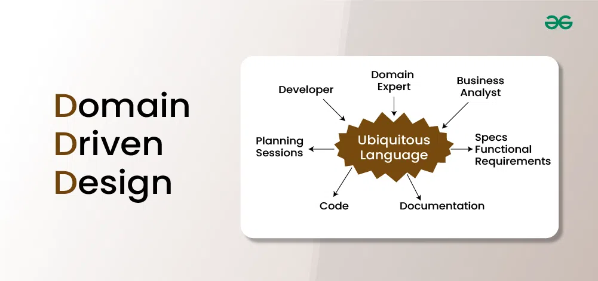

Domeenipõhine disain keskendub tarkvarasüsteemi konkreetse probleemivaldkonna mõistmisele
ja modelleerimisele. See rõhutab tihedat koostööd valdkonna ekspertidega,
et haarata domeeni keerukus ja detailid. DDD pakub põhimõtteid ja mustreid,
mis aitavad arendajatel täpselt kujutada domeenikontseptsioone tarkvaras.

Eelised
Soodustab tõhusat suhtlust valdkonna ekspertide, arendajate ja sidusrühmade vahel ühtse keele abil.
Aitab meeskondadel keskenduda rakenduse kõige olulisematele osadele ärieesmärkide saavutamiseks.
Julgustab paindlikku disaini, mis kohaneb muutuvate ärivajaduste ja turutingimustega.
Hoiab domeeniloogika, infrastruktuuri ja kasutajaliidese selgelt eraldatuna.
Toetab selgelt määratletud domeeniobjekte, muutes testimise lihtsamaks ja tõhusamaks.
Puudused
DDD võib suurtes süsteemides tuua kaasa keerukust. Täpne äriloogika modelleerimine nõuab põhjalikku arusaamist ja ambivalentsuse hoolikat juhtimist.
Keerulistes domeenides võib erinevate mudelite ja piiratud kontekstide ühtlustamine olla raske, mistõttu on selge kommunikatsioon ja koordineerimine hädavajalikud.
DDD rakendamine võib nõuda uusi tehnoloogiaid ja raamistikke, mis raskendavad olemasolevate süsteemidega integreerimist. Samuti tuleb arvestada jõudluse ja skaleeritavuse probleemidega.
Meeskond võib eelistada traditsioonilisi meetodeid, mistõttu on DDD omaksvõtmiseks vaja tõhusat suhtlust ja haridust selle eeliste kohta.
Case Vahendi kasutus
EventStorming
EventStorming on töötuba ja modelleerimistehnika,
mida on võimalik kasutada DDD süsteemide kujundamisel.
Selle abil kaardistatakse domeeniprobleemide äriloogika,
kasutades sündmustepõhist lähenemist.